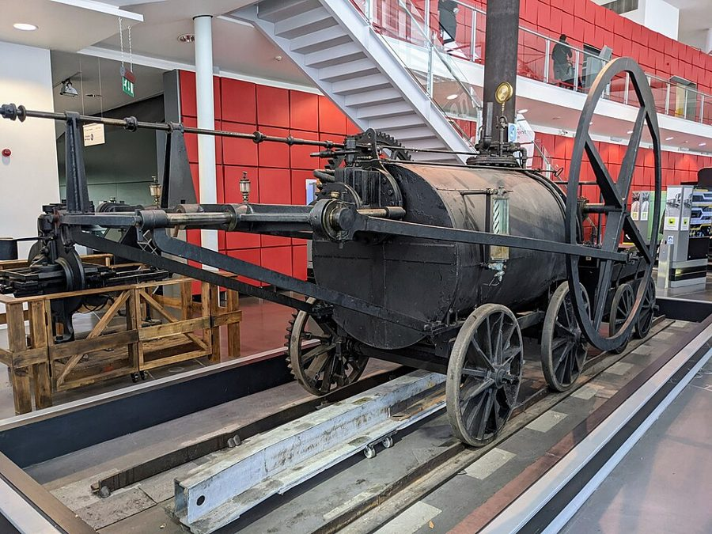
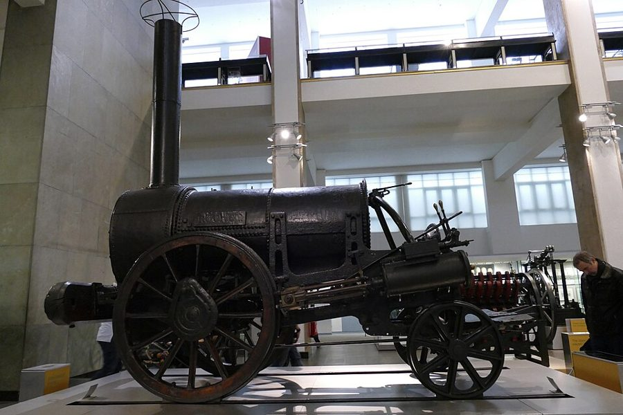
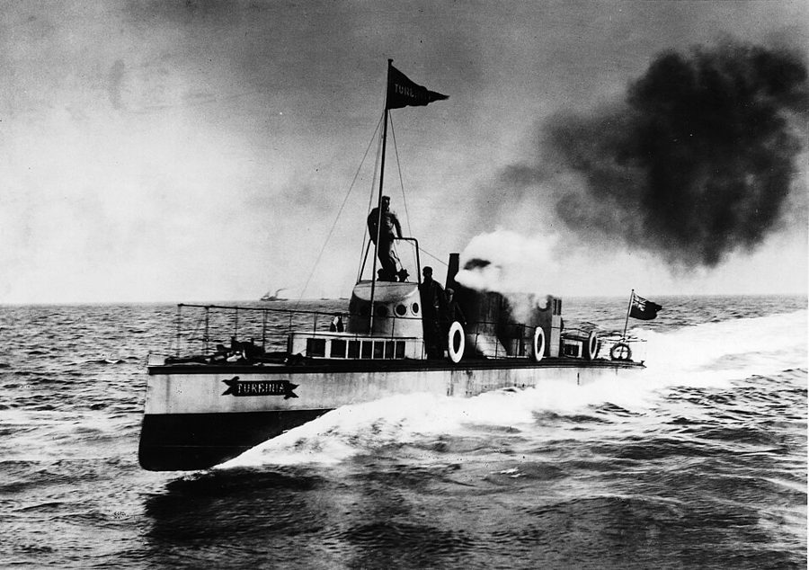
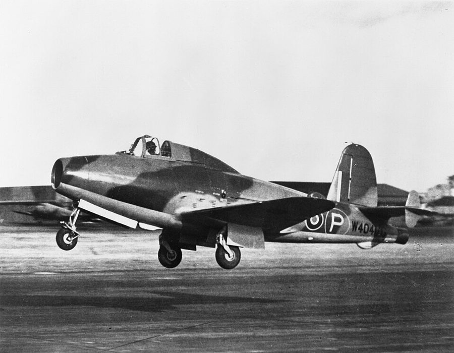
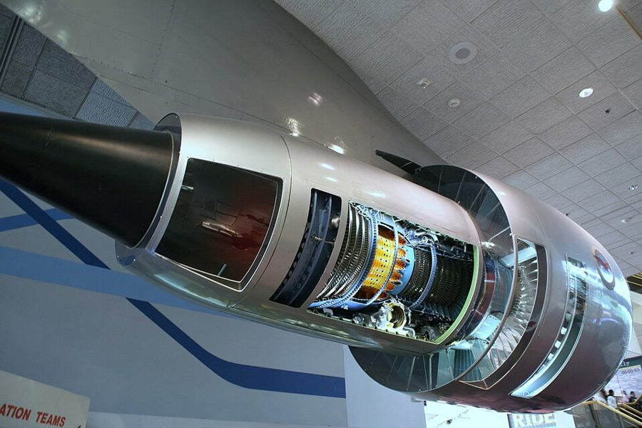
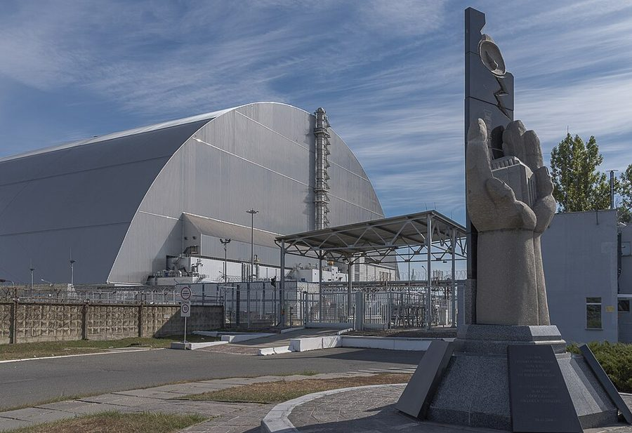
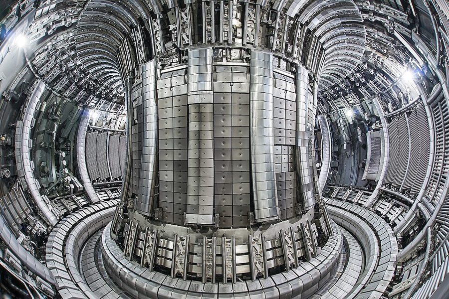

ratio of power to weight
… a higher ratio of power to weight …
功重比，每千克机器出多少功率
power 是功率，weight 是机器自重。常写成 power-to-weight ratio，发动机、电池、电机都拿它比。
第 3 章的后半。卡诺和克劳修斯给热机定下上限之后，作者看热机在今天的几条路上怎样长大：铁路上的机车、电厂里的汽轮机、飞机上的喷气发动机，再到核电。最好读的是 §8：喷气发动机和汽车发动机做的是同样四步，一个按时间轮流，一个按位置排开同时做；涡扇靠大风扇把更多空气慢慢推出去，省油又安静。§9 从切尔诺贝利和福岛引出全书后面的大题目：风险。§10 是作者对全章的结论：工程是为一个目的去做成一件事。
第 3 章的前半讲到：矿井排水的需要逼出了蒸汽机，卡诺说热机效率有上限、取决于冷热两端的温差，克劳修斯说能量守恒、可用的那部分却只会变少。这一页没有新的物理定律，讲热机怎样从矿井走进火车、电厂和飞机，又怎样带出核电的风险。§10 是全章的结论，作者回到第 1 章那套斜体词：will、activity、knowledge、objects。
别被带歪：§9 聚变那段把几件事搅在一起。说产物没有放射性，可燃料氚有放射性，中子还会让反应堆的结构材料带上放射性；粒子加速器打靶和「一亿度」说的也是两件事。罗西的能量催化器至今没有通过独立检验，别当成和聚变并列的前沿。
要同样大的推力，是把少量空气喷得飞快省油，还是把一大团空气慢慢推出去省油？
读的时候带着这几个问题，读完回来对照「检查一下理解」。
原书这一章没有小标题，一口气写下来。下面的节是本站按段落分的：粗体是本站起的节名，后面是档和英文词数；再下面是这一节开头的几个英文词，在 Kindle 里搜它就能跳过去。读完打个勾。
先把这一页用到的几个概念用书外的例子讲一遍。作者拿它们推出什么，读原书时自己看。后面各页用到时会链回这里。
活塞机是一来一回：气体推着活塞走一段，再退回来，靠曲轴把往复变成转动。涡轮机是让水、蒸汽或空气一直冲过一圈斜装的叶片，直接带着轴转，水车、风车、汽轮机都是。没有来回换向，同样重的机器能出大得多的功率，所以电厂里转发电机的都是它。
火在气缸外头烧锅炉的是外燃机，比如蒸汽机；油和空气直接在气缸里烧的是内燃机，比如汽车发动机。四冲程是内燃机一个循环的四步：吸进油气、压缩、点火做功、排气，曲轴转两圈。今天的火电厂、核电厂多用朗肯循环：水泵把水压进锅炉，烧成蒸汽冲过汽轮机，再在冷凝器里凝回水，一圈圈循环。冷凝器就是卡诺说的冷的一端。
在这一页：§7 一口气给出这几样；§8 的燃气轮机、§9 的核电站都接在这张图上。
燃气轮机做的还是吸、压、烧、排四步，只是四步在发动机里从前到后排开，同时进行：压气机一直在压，燃烧室一直在烧，涡轮一直被燃气冲着转，再通过同一根轴带动前面的压气机。
推力 = 每秒穿过发动机的空气质量 ×（喷出的速度 − 飞机的速度）。书里说成「动量的变化率或质量乘速度」，有点含混，按这个式子记。同样的推力，可以把少量空气喷得飞快，也可以把大量空气推得慢一些。后一种省油：推力一定时，喷出的速度比飞机快得越多，留在身后那股风里白白扔掉的能量越多。喷流越快，噪声也越大。涡扇前面那把大风扇，就是让一大股外涵道空气不进燃烧室，绕过核心，慢一些往后推。
在这一页：§8 用牛顿第二、第三定律讲推力，讲涡扇时说大风扇更省、更安静，靠的都是这笔账。
裂变：铀-235 的原子核吃进一个中子，裂成两块较轻的核，放出热和两三个新中子，新中子再去撞别的铀核，这叫链式反应。控制棒能吸中子，插深一点，反应就慢下来。核电站只是拿这堆热换掉了锅炉底下的火，后面的蒸汽、汽轮机、发电机和火电厂一样，所以作者说它也是热机。
聚变反过来：两个很轻的核挤到一起合成一个，太阳就靠氢聚变发光。地上最容易做的是氢的两种同位素氘和氚，合成氦，放出一个中子和大量能量。难在要把燃料加热到上亿度，还要把它约束得够久、够密：托卡马克用强磁场把它悬在环形真空室中间，激光装置靠一瞬间的压缩。书里说产物没有放射性，氦确实没有，可燃料氚有放射性，高能中子也会让反应堆的结构材料带上放射性。
在这一页：§9 先讲裂变的核电站，再讲聚变。风险在这里只是点题，概念留到第 6 章。
Donald Schön 是美国的哲学家和城市规划学者，1983 年写了《反思的实践者》（The Reflective Practitioner）。他看建筑师、心理治疗师、规划师怎么干活，发现高手不是先把理论想全再照着做，而是边做边看情况给的反馈，随时调整，事后再回头想一遍。和它对着的，是把专业工作看成「把科学理论套到问题上」的想法。
程序员对这个不陌生：写一点，跑一下，看报错，改；上线以后复盘。作者借这个词说工程师两头都要顾：往里抠细节，瓦特改阀门和控制机构就是例子；往外看大局，钱、社会、环境、用户、维护、监管都在里面。
在这一页：§10 收尾时用它。同一节开头的 will、activity、knowledge、objects 是第 1 章那套标签。
书里点名的人、发明和工程，挑读懂这一页用得上的讲。按在书里出现的顺序排，节号是你在书里哪一节遇到它。
瓦特的蒸汽机用的是低压蒸汽，又大又重。特里维西克把蒸汽压到几个大气压，同样的力用小得多的气缸就够。1804 年 2 月，他的机车在南威尔士梅瑟蒂德菲尔的 Penydarren 铁厂拉着约 10 吨铁和 70 个人走了近 10 英里，常被算作第一台在铁轨上跑起来的蒸汽机车。书里说他的第一列火车 1807 年从斯旺西开到曼布尔斯，这和史实对不上：斯旺西—曼布尔斯铁路 1807 年开始收票载客，是最早的客运铁路之一，但车是马拉的。

1829 年，利物浦—曼彻斯特铁路（书里写成 Manchester and Liverpool）要挑选机车，办了一场比赛，史称雨山试车（Rainhill Trials）。斯蒂芬森的「火箭号」（Rocket）胜出。书里说那时的机车能拉 30 名乘客跑到每小时 30 英里，约 48 公里。书后参考文献点了 George Stephenson 和儿子 Robert，说父子俩发展了铁路。作者拿它说明，特里维西克之后二十多年，机车已经能载客跑起来了。原书图 9 是 2010 年造的全尺寸复制品。

帕森斯让蒸汽一级一级地穿过很多排叶片，每一级只降一点压力，叶轮转得飞快又不会被冲坏。为了让海军看到它，他造了一艘装汽轮机的快艇「透平尼亚号」（Turbinia），1897 年在英国海军的阅舰式上不请自来，从军舰的队列之间高速穿过，没有船追得上。此后英国海军的新军舰陆续改用汽轮机。今天火电厂、核电厂里带着发电机转的，还是这种多级汽轮机。

书里说德国的冯·奥海因也在做同样的事，「尽管如此」，英国政府战时的心思在别处，惠特尔很难说服政府投钱，进展很慢，到 1941 年才飞起来。这句衔接很别扭，容易读不出要紧的一点：德国先飞了。1939 年 8 月 27 日，装冯·奥海因发动机的亨克尔 He 178 首飞，比二战爆发早几天。英国第一架喷气式飞机格洛斯特 E.28/39 装的是惠特尔的发动机，1941 年 5 月 15 日才首飞。两边是各自独立做出来的。

书里说今天的民航客机多用涡扇发动机，前面的风扇直径可达 3 米上下。看这台剖开的模型：风扇吸进来的空气大部分不进核心，从核心外面那一圈通道直接往后吹，这就是外涵道空气；只有一小部分钻进核心，经过压气机、燃烧室、涡轮。推力两股相加。为什么这样更省油、更安静，见概念块「燃气轮机和推力」。

1986 年 4 月，乌克兰（当时属苏联）切尔诺贝利核电站的 4 号机组在停堆检修前做一项安全试验，反应失控，反应堆爆炸起火，放射性物质随风飘过大半个欧洲。书里说超过 33.6 万人撤离。福岛第一核电站是 2011 年 3 月的大地震引来海啸，淹掉了备用电源，冷却停了，几个机组的堆芯熔毁。两次事故在国际核事件分级（INES）上都是最高的 7 级。书里引的国际原子能机构（IAEA）结论，见「本站怎么看」。

聚变的燃料要加热到上亿度，又不能碰到容器壁。托卡马克是一种环形真空室，用强磁场把高温等离子体约束在中间，英国卡勒姆的欧洲联合环（JET）就是一台。书里那句「用小型粒子加速器把氘离子打到氚靶上，在一亿摄氏度下做到过聚变」把两件事并在了一起：加速器打靶确实能产生聚变，实验室拿它当中子源，一亿度说的却是托卡马克里等离子体的温度。核弹里放出的聚变能是一次爆炸，不是可控的。书里接着提到意大利人 Andrea Rossi 的「能量催化器」（E-Cat），说它靠「低能核反应」、有专利、还没充分检验。后来的事见「今天怎么看」。

读英文原书时值得停一下的词和句：工程里的熟词生义、英式说法、作者的比喻。灰色斜体是原句里连续的几个词，在 Kindle 里搜它就能找到；标「每个字都认识」的，是每个词都眼熟、合起来意思却变了的，最容易读错。点「记下」收进词本。
下面是作者在这一章里的主张，本站按主张之间的逻辑重排，不按原书顺序；每条后面是节号，拿不准就回书里那一节再读一遍。
活塞蒸汽机一直用到 20 世纪，后来发电让给了汽轮机：效率更高，功重比更高。喷气发动机做的还是汽车发动机那四步，他说它更「优雅」，因为四步连续地在一根轴上进行。涡扇用大风扇推更多的空气，推力来得更高效，也更安静。
§7 §8核电站也是热机，只是热来自链式反应。切尔诺贝利之后，有人说核电风险太大，有人说那种松懈不会出在自己的电站。许多政府「或许不情愿地」把它当成应对气候变化的必要之恶，福岛后又有不少在重新考虑。他说这些事故说明安全是系统行为的复杂问题；风险是 STEM 各领域都有的核心问题，只是程度不同，第 6 章细讲。
§9产品会变、要维护，所以也是一串过程。人改变地球的本事大了，风险成了核心问题。安全要靠抠细节，瓦特改阀门和控制机构效果就很大；也要看大局：钱、社会、环境、用户、维护、监管。他借 Schön 的说法：边做边反思。
§10他用第 1 章那套斜体词收全章：人的意志被实际需要推着去做新事，做的过程中生出求知，最后落成新的动力和材料。萨弗里、纽科门偏手艺；瓦特、帕森斯、惠特尔更像敢冒险的先驱和企业家；卡诺、克劳修斯、朗肯偏理论和实验。各人一点点往前推。
§10Progress has not been uniform but stuttering and irregular – but it has been relentless.— §10。本站译：进步并不均匀，而是磕磕绊绊、时断时续，可它从没停下。
他说热机的整部历史不只是找出新想法，而是把事做成；解题的严谨来自要实用的需要。这需要「明智的预见」，它包含逻辑严密，但不止于此。做的东西要创造价值，价值又会从几个相互冲突的角度去看，社会剧变时尤其如此。
§10The essence of all engineering activity is doing something to fulfill a purpose – a process.— §10。本站译：一切工程活动的本质，是为实现一个目的去做成一件事，这是一个过程。
合起来：这一页从机车讲到核电：热机越做越大、越做越精，风险也跟着变大。作者的结论落在「做」上：工程是为了目的把事做成，靠的是预见，也靠在做的过程中不断反思。
这一章合起来：先从橡皮筋和桥讲应变能：结构站得住，靠的是内部做功的能力跟得上外部加来的需求。然后讲热：矿井排水逼出了蒸汽机，卡诺和克劳修斯又说明热变成功有上限、能量会变得不可用，章名「不能白得」说的就是这个。热机后来进了火车、电厂和飞机，也带来了核电的风险。作者从这段历史得出：实践带着求知往前走，工程的本质是为目的去做成事。
书 2012 年出版。下面挑出这一页里能被后来的研究或事情检验的说法，分「书里 / 当时 / 今天」几栏，并给一个结论。结论判的是标题里「书里的说法：」后面那一句。全书的这一节汇总在今天怎么看。
读完作者的主张，再看它站不站得住。每一块摆出三样：主流怎么看，作者怎么看，本站的评论。最后一句是本站对这一页的总体判断。
主流看法：蒸汽机是公认的「技术在前、科学在后」：纽科门的机器 1712 年就在矿井里抽水，卡诺 1824 年才问效率有没有上限，热力学的两条定律要到 19 世纪中叶。核能正好倒过来：1938 年底化学家在实验室里发现了铀核裂变，四年后芝加哥就建成了第一座反应堆，没有这项物理发现就没有这门工程。
作者的看法：热机史是人的意志被实际需要推着，带出求知；实践、生产和科学交替领先，几百年里一直没停。§10
本站的评论：放在蒸汽机上，这个说法很有力，第 3 章前半的故事就是证据。可同一章后半的例子不全是这样：核电、聚变，都是先有物理，再有工程。他用 leapfrog（交替领先）这个词，其实已经承认两头都会跑在前面。「意志、活动、知识、物件」是好记的描述框架，不是能检验的论断，当作一种看历史的角度就好。
主流看法：国际原子能机构的国际核安全咨询组（INSAG）1986 年的第一份报告，把主因放在操作人员违反规程上，也提出了「安全文化」这个词。1992 年的修订报告 INSAG-7 改了重心：反应堆设计有大缺陷，控制棒末端是石墨，刚往下插时反而让反应先加快；苏联核工业对安全的管理和监管也有问题；安全文化不足仍是深层原因。
作者的看法：IAEA 把主因归到运行文化差和反应堆设计差。各方反应不一：有人说核电太危险；有人说那种设计和运行上的松懈不会出在自己的电站。紧接着是一句很短的「核电可以做到安全」，读成那些人的主张、读成作者自己的立场都说得通。§9
本站的评论：作者把「人」和「设计」两样并列，正是第 6 章要讲的系统观：事故很少只怪一个按错按钮的人。「我们的电站不会这样」这种想法，25 年后在福岛又被检验了一次：另一种堆型，另一种起因，是海啸淹了备用电源。只排除别人犯过的错，不等于安全。
本站的总体看法：这一页多是热机应用的清单，§8 的燃气轮机和涡扇讲得最好，值得配图细读。核电一段两边都摆了，但聚变那几句和罗西的能量催化器要打折扣。§10 是全章的结论，先读；把它当作作者对工程的一种看法，不是定论。
先在心里答，再点开。答错的那题，回书里把对应那一节再读一遍。
看燃料在不在气缸或发动机里面烧。蒸汽机的火在锅炉里，是外燃机；汽车发动机和喷气发动机让燃料直接在里面烧，是内燃机，书里把燃气轮机和喷气发动机也列进了内燃机的品种。
书里给的理由是汽轮机效率高得多，功重比也更高。它让蒸汽一直冲着叶片转，没有活塞那种来回换向。
汽车发动机的四步在同一个气缸里按时间轮流做，压力、温度忽高忽低；燃气轮机把四步按位置从前到后排开，同时连续地做，装在一根轴上，每个位置的压力、温度基本稳定。
5 万 ÷ 125 = 400，喷出速度要比飞机快 400，即 650 米/秒；5 万 ÷ 625 = 80，即 330 米/秒。后一种省油：喷流比飞机快得少，白扔在身后的能量少。这就是涡扇大风扇的道理。
热的来源不一样：核电站靠铀核裂变的链式反应放热，用控制棒调快慢。后面一样：拿热把水变成蒸汽，推汽轮机，带发电机。
运行文化差和反应堆设计差。他由此说安全是系统行为的复杂问题，风险是工程和 STEM 各领域的一个核心问题，留到第 6 章细讲。
工程是为一个目的去做成一件事，是一个过程；它需要明智的预见，不只是逻辑严密，做出的价值还要从几个可能冲突的角度去看。
用一句话说这一页：
想一想：你今天用到的东西里，哪些背后转着一台热机（手机充电的电从哪来、坐的车、头顶飞过的飞机）？哪些已经完全不靠热机了？
读过又忘了，从这里想起来。挑的是这一页最值得记住的例子和说法，不按原书顺序；每条后面是节号，想细看就回书里那一节。全书各页的这一节都收在全书回顾。
一句话：热机从矿井走进火车、电厂和飞机，主角从活塞换成涡轮；核电让风险登场；作者说工程是为目的去做成事。
汽轮机让蒸汽一直冲着叶片转，效率和功重比都比活塞机高。帕森斯 1884 年发明现代汽轮机，今天的火电厂、核电厂还在用。
§7汽车发动机在一个气缸里按时间轮流吸、压、烧、排；燃气轮机把四步从前到后排开，同时连续地做，作者说这更优雅。
§8推力是每秒推多少空气乘速度差。同样推力，大风扇把更多空气推得慢一些，白扔的能量少，噪声也小，这就是涡扇。
§8惠特尔 1930 年申请专利，英国的喷气机 1941 年才飞；德国冯·奥海因的发动机装在 He 178 上，1939 年 8 月就先飞了。
§8反应堆只换掉了锅炉底下的火，后面的蒸汽、汽轮机、发电机和火电厂一样。切尔诺贝利和福岛让作者把风险推到了台前。
§9作者的结论：热机史是实际需要带着求知走，进步断断续续但不停；工程要明智的预见，要抠细节也要看大局，边做边反思。
§10